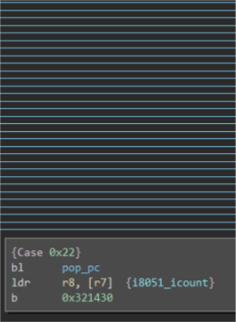

Sum Total of ISA Knowledge
@alexkropivny
Unsolicited Firmware Archeology and You

"I bet I can hack this"
References
Tools to assist static portion of workflow:
Manual Static Analysis Automation
Types of Failures
- False positives discovering more false positives (sev: high)
- Underapproximations makes you re-visit code (sev: annoying)
- Script stomped over manually-entered markup (sev: only happens once)
Useful Automation
- Instruction length disassembler
- All control flow effects
- Constant propagation (sometimes)
Useful Automation
- Command/state machine tables (fancy switches)
Lifter Problems: System Code
- Uncommon instruction classes
- Once-per-boot setup features
- Shared memory bus: FIFOs, control flags, DMA
Lifter Problems: Abstractions
- Flattening memory spaces
- Aliasing with registers (or other memory)
- Inter- vs intra-procedural analysis
- C memory and stack model
Examples
Examples
Examples
Examples

Examples

Planned Workflow
Emulator Architecture

Fuzzing A vs B

- explore on commonly-occuring instructions
- bin differences on instruction opcodes
- prioritize on registers affected
QA by Symbolic Execution
ii = lift.instruction_at(bv, here)
emu = lift.function(current_function)
s = ii.solver()
emu.constrain(s)
s.add(z3.And(ii['A'][0] == emu['mem'][0][0x1ef2608],
ii['A'][-1] != emu['mem'][-1][0x1ef2608]))
print s.check()
print s.model()[x['A'][0]].sexpr(), ':',
print s.model()[x['A'][-1]].sexpr()
x = lift.function(current_function)
summary = x['Y4'][-1] != x['Y4'][0] & x['Y0'][0]
s = x.solver()
s.assert_and_track(summary, 'not-equivalent')
print s.check()
s.unsat_core()
Program Analysis is a Search Problem
- Fast backtracking vs slow complex search
- Specialized algorithms vs generic solver
- Heuristics compensating for generic solver
- Checking results of ∃ search vs ∀ search
- Approximating state coverage via path coverage
Workflow and Correctness

References
Literature reviews to pull terminology from:
What Went Right &
What Went Wrong
- Approximations:
- acceptable, but validate major assumptions
- Partial lifting:
- acceptable and commonplace
- Emulator-as-oracle:
- less partial, needs a map to lifted model
- Full equivalence checking versus emulator:
- hampered by 2 and 3, but sometimes works
- i8051 - minimum viable processor module for 8051
- STC - (WIP) attempt at generic lifter analysis tools
- slides (PDF render, reveal.js with notes)
Example Tools
i8051 - minimum viable processor module for 8051
STC - (WIP) attempt at generic lifter analysis tools
slides (PDF render, reveal.js with notes)